BIENESTAR UNIVERSITARIO
Sede Regional Túquerres - Universidad de Nariño
Socioeconómica
Cultura

Deportes

Desarrollo Humano
Salud
Escuchadero
Promoción Socioeconómica: Becas y beneficios estudiantiles
El Área de Becas y Beneficios Estudiantiles de la Universidad de Nariño tiene como objetivo principal garantizar el acceso y la permanencia de los estudiantes en la educación superior, especialmente para aquellos en condiciones de vulnerabilidad socioeconómica.


Entre los programas disponibles se encuentran:
- Becas de Alimentación: Apoyo a estudiantes con el servicio de una beca alimentaria durante todo el semestre académico. Esta beca incluye desayuno y almuerzo durante los días hábiles en la universidad.
- Auxilio de Arrendamiento: Apoyo parcial en el pago de arrendamiento.
- Monitorías: Actividad extracurricular que busca fortalecer la formación integral y el desempeño profesional de los estudiantes. Incluye apoyo en actividades académicas, administrativas, de investigación e interacción social.
- Enlace Convenio Jóvenes en Acción: Seguimiento permanente a los estudiantes beneficiarios del programa Jóvenes en Acción de la Universidad de Nariño.
Contacto
Responsable: Psic. Nohora Aracelly Benavides Escobar
Correo: bienestartuquerres@udenar.edu.co
Cultura
El Área de Cultura de la Universidad de Nariño promueve el bienestar integral mediante manifestaciones artísticas que preservan nuestra identidad cultural y enriquecen la formación de la comunidad universitaria.
 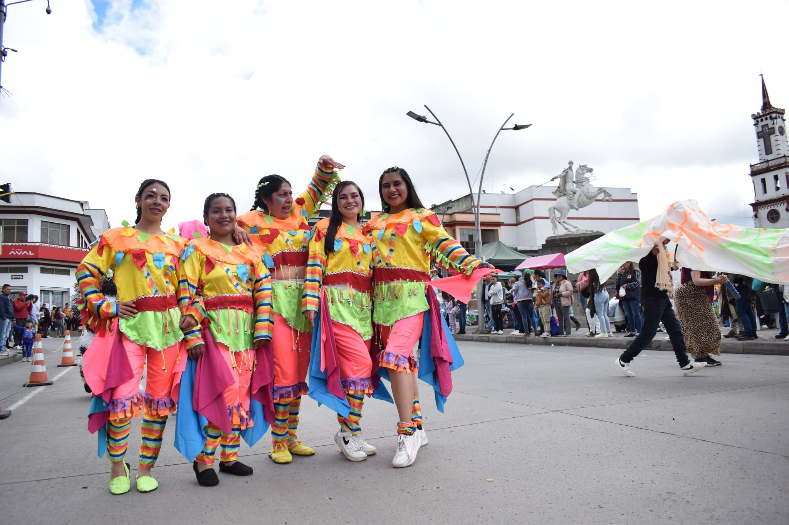
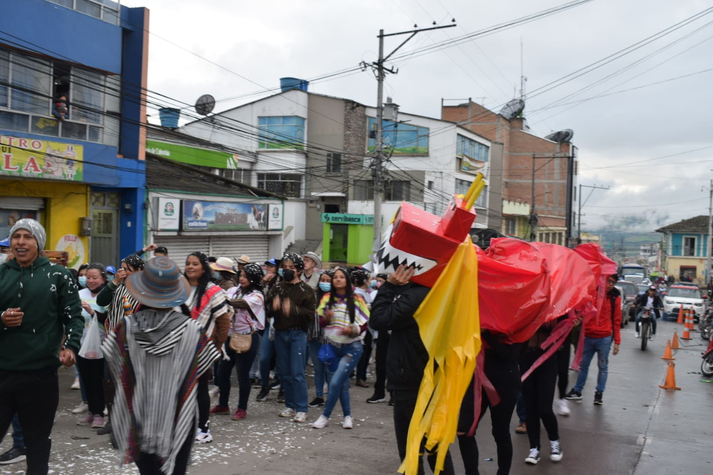
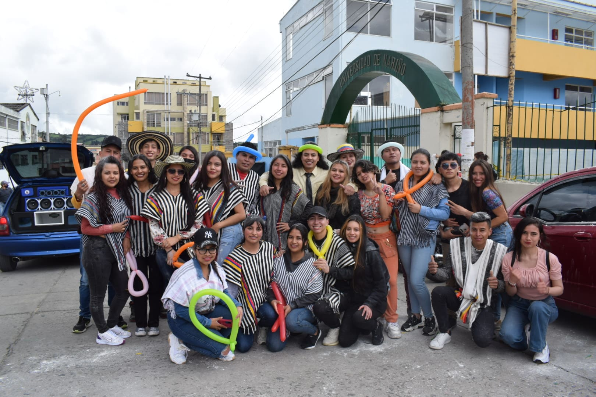
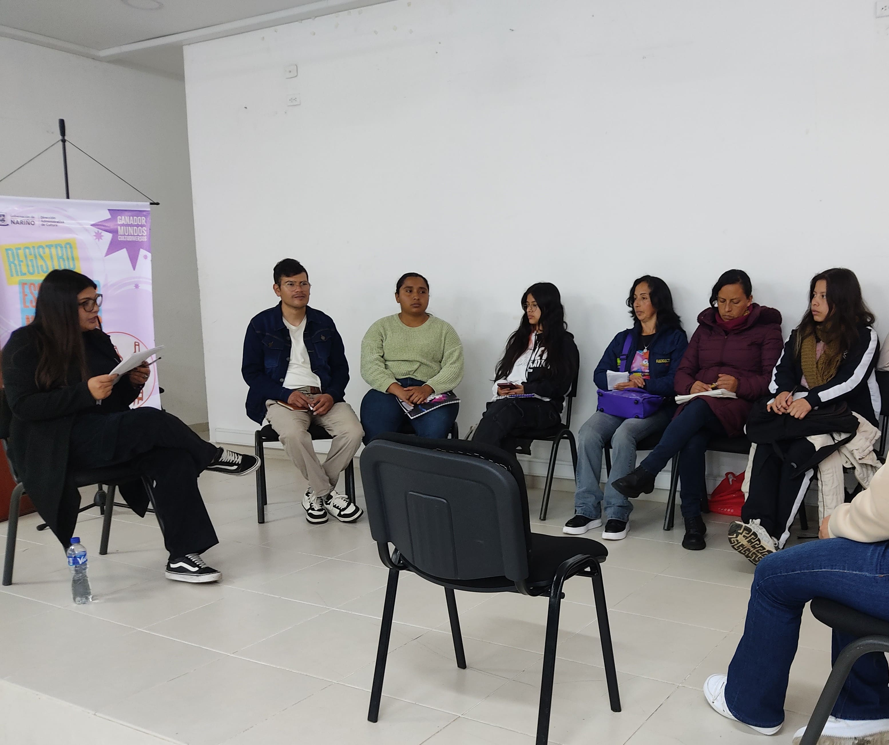
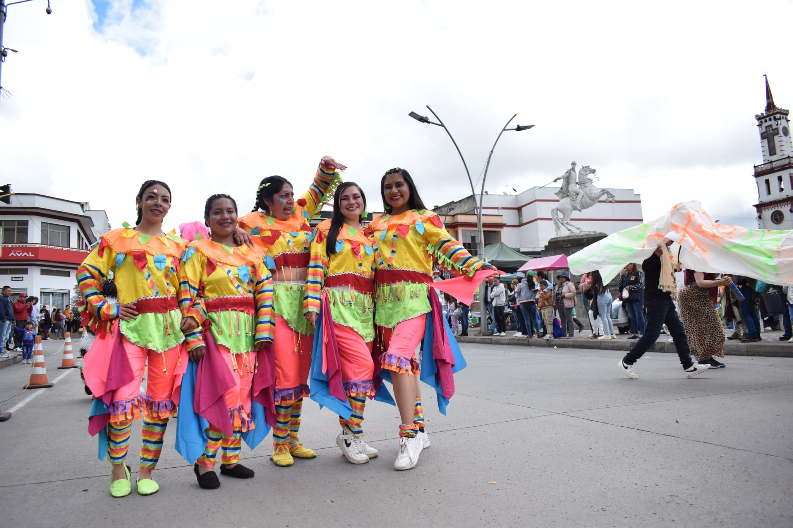
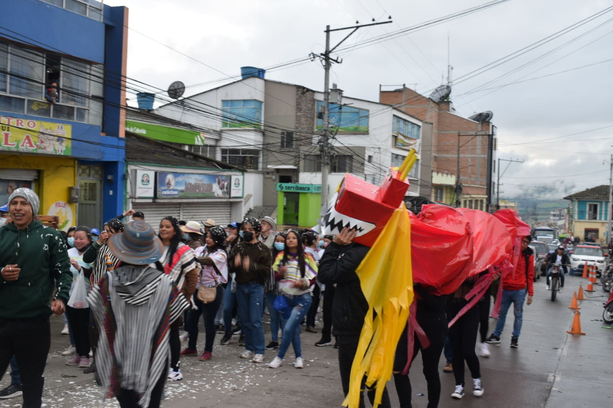
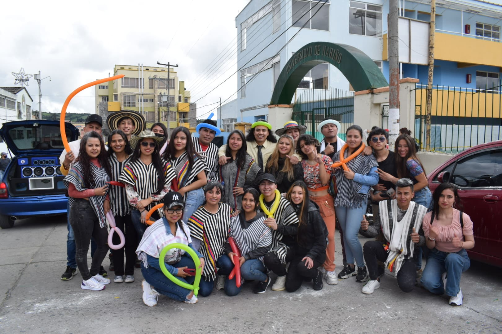
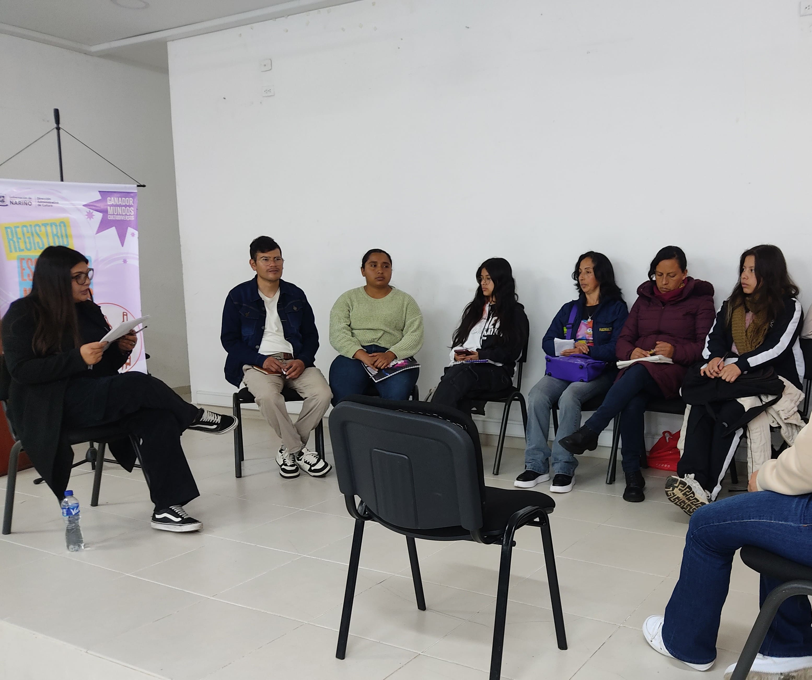
Entre las actividades culturales que se promueven se encuentran:
- Talleres de música, teatro y danza
- Grupos artísticos institucionales
- Muestras culturales
- Taller de lectura
Contacto
Responsable: José Damián Portilla Oliva
Correo: gestionculturaltuquerres@udenar.edu.co
Deportes y Recreación
El Área de Deporte de la Universidad de Nariño fomenta el bienestar físico de la comunidad universitaria mediante actividades deportivas, lúdicas y de esparcimiento que promueven su desarrollo integral. Además, coordina la participación activa de los equipos institucionales en eventos competitivos a nivel local, regional y nacional.
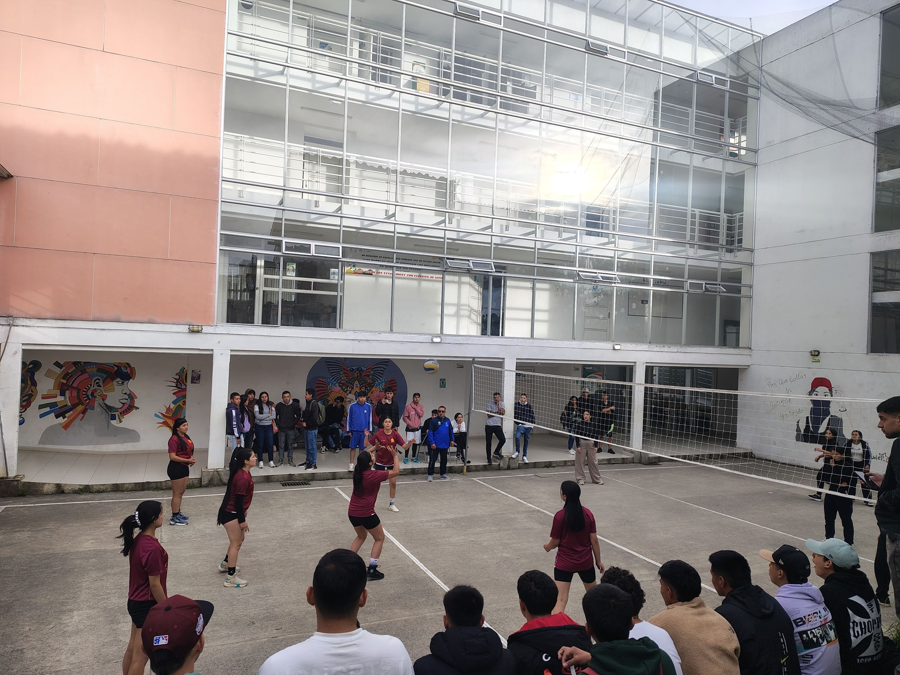

 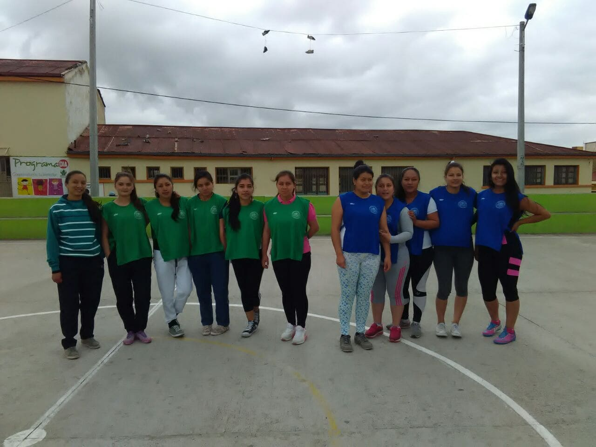
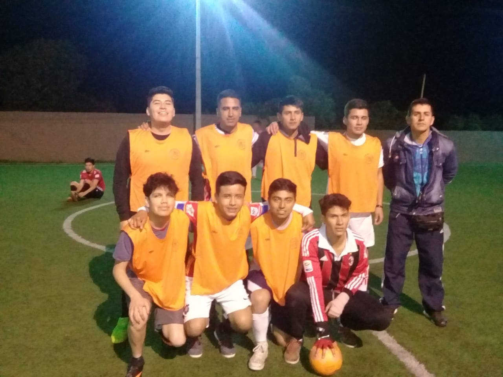
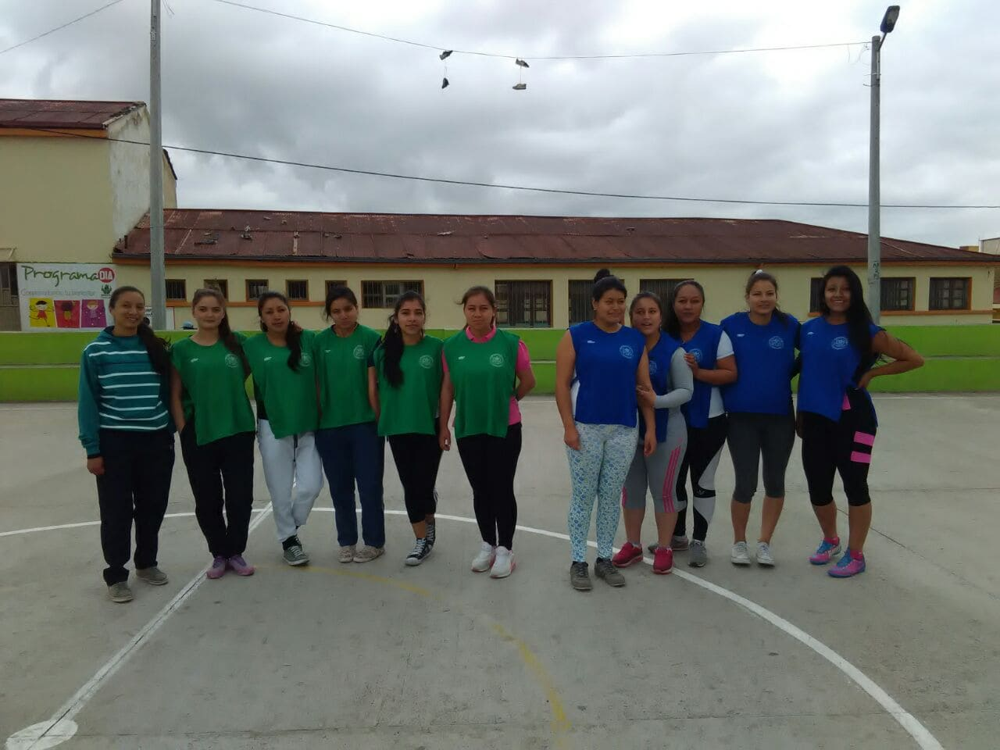
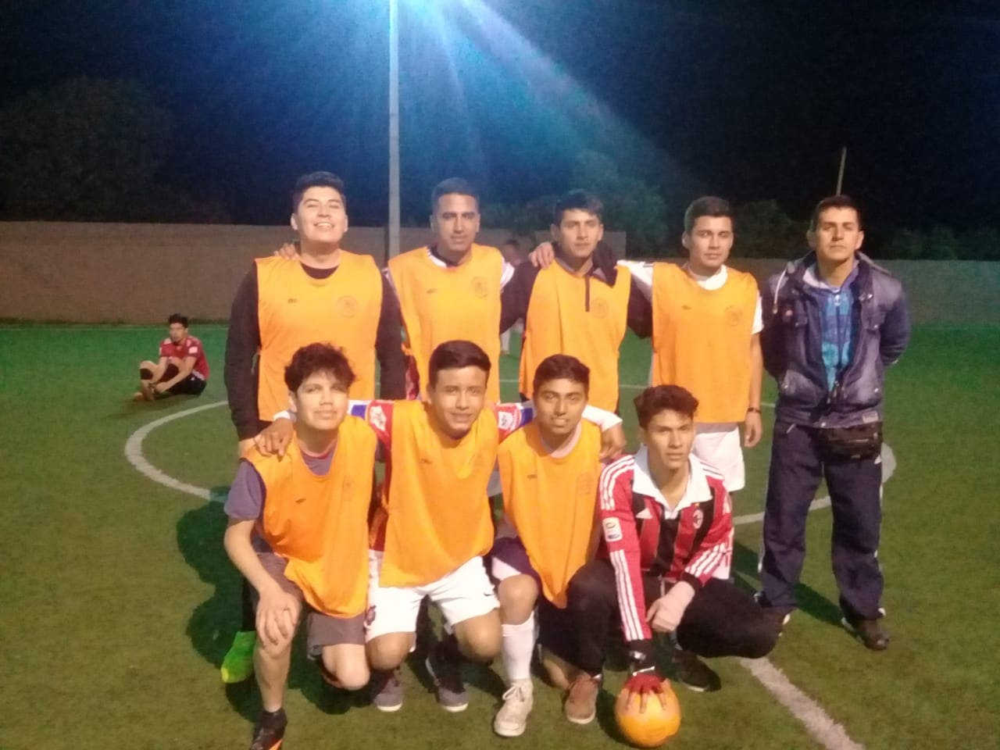
Entre las disciplinas deportivas disponibles se encuentran:
- Fútbol, Baloncesto, Voleibol y Atletismo.
- Fútbol sala, Ajedrez y Tenis de mesa.
- Actividades recreativas.
Contacto
Responsable: Lic. Ronal Armando Cordoba Arteaga
Desarrollo Humano
El Área de Desarrollo Humano de la Universidad de Nariño tiene como objetivo principal fortalecer las competencias socioemocionales y el crecimiento personal de los estudiantes, docentes y personal administrativo.

Entre los programas y servicios que ofrece se encuentran:
- Programa de Inclusión: La Universidad garantiza la asignación y seguimiento de tutorías académicas para estudiantes con discapacidad, junto con prioridad en los servicios de salud.
- Clima organizacional: Promoción de momentos de distensión mediante actividades lúdicas, deportivas y recreativas, las cuales contribuyen a reducir el estrés y fortalecer las relaciones interpersonales.
Contacto
Responsable: Psic. Nohora Aracelly Benavides Escobar
Correo: bienestartuquerres@udenar.edu.co
Servicios de Salud
La Universidad de Nariño, en convenio con la IPS Los Ángeles, ofrece los siguientes servicios de salud para estudiantes de la Sede Regional de Túquerres:

- Medicina General: Consultas médicas, diagnóstico y tratamiento de enfermedades comunes.
- Odontología: Atención preventiva, limpiezas y tratamientos odontológicos.
- Psicología: Acompañamiento profesional para salud mental y bienestar emocional.
- Promoción y Mantenimiento de la Salud: Programas de prevención y educación en hábitos saludables.
Contacto y Horarios
Solicitud de citas: Oficina de Bienestar Universitario, Túquerres
Horario de atención: Lunes a viernes de 8:00 a.m. a 5:00 p.m.
Correo: bienestartuquerres@udenar.edu.co
El Escuchadero
Espacio de acompañamiento y escucha para la comunidad universitaria. Aquí puedes solicitar orientación y apoyo cuando lo necesites.

Contacto
Responsable: Psic. Lithsel Valeria Rey Cabrera
Correo: escuchatuquerres@udenar.edu.co